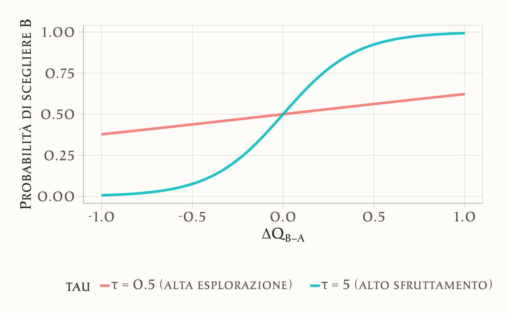
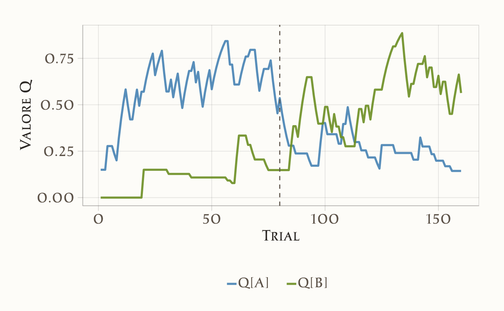

Questo capitolo introduce il modello di Rescorla–Wagner (RW) con regola di scelta Softmax(Rescorla & Wagner, 1972), come naturale estensione del modello di revisione degli obiettivi discusso nel capitolo precedente. Nel modello precedente l’aggiornamento era un termine additivo guidato da una discrepanza osservata; qui l’aggiornamento diventa esplicitamente guidato dall’errore di predizione del rinforzo (reward prediction error, RPE), ossia la differenza tra rinforzo ottenuto e rinforzo atteso. Questa formulazione è più psicologicamente plausibile e allineata all’evidenza in psicologia e neuroscienze: si impara proporzionalmente a quanto l’esito sorprende le aspettative.
Accanto al livello di apprendimento (aggiornamento dei valori associativi \(Q\)), introduciamo il livello decisionale: le scelte non sono deterministiche, ma riflettono un compromesso fra sfruttamento dell’opzione migliore ed esplorazione di alternative. Con due opzioni, la Softmax si riduce a una logistica della differenza\(Q_B-Q_A\), modulata dal parametro di inverse temperature\(\tau\): valori alti di \(\tau\) rendono le scelte più coerenti con \(Q\), valori bassi più esplorative.
Questa distinzione apprendimento–decisione è cruciale: consente di separare il meccanismo che aggiorna le aspettative (parametro \(lr\)) dal meccanismo che le traduce in probabilità di scelta (parametro \(\tau\)). Nei paragrafi successivi mostreremo come simulare dati (es. probabilistic reversal learning), stimare i parametri con Stan e interpretare i profili individuali e di gruppo.
Preparazione del Notebook
46.1 Il Modello di Rescorla–Wagner
Il modello di Rescorla–Wagner (RW) è uno dei modelli più influenti nello studio dell’apprendimento associativo. Esso descrive come gli individui aggiornino le proprie aspettative in base all’esperienza, introducendo un meccanismo semplice ma potente che spiega fenomeni come acquisizione, estinzione e blocking.
L’idea di fondo è che l’apprendimento si realizzi attraverso l’aggiornamento della forza associativa\(Q_t(s)\) di uno stimolo \(s\) al tempo \(t\), in funzione della discrepanza tra ciò che ci si aspettava e ciò che si è effettivamente osservato.
46.1.1 Aggiornamento delle aspettative
Dopo ogni prova, la stima del valore viene modificata secondo la regola:
\[
\delta_t \;=\; R_t - Q_t(s)
\] è l’errore di previsione (prediction error), cioè la differenza tra la ricompensa ottenuta \(R_t\) e l’aspettativa precedente \(Q_t(s)\).
Se \(\delta_t > 0\): la ricompensa è stata migliore del previsto → l’associazione si rafforza.
Se \(\delta_t < 0\): la ricompensa è stata peggiore del previsto → l’associazione si indebolisce.
Se \(\delta_t = 0\): ciò che si è osservato coincide con l’attesa → nessun aggiornamento.
Il parametro $ $ rappresenta il tasso di apprendimento (qui lo indichiamo con lr). Con lr alto l’aggiornamento è rapido; con lr basso è lento e più “conservativo”.
Variante (facoltativa): tassi distinti per PE positivo/negativo
In alcune applicazioni si usano due tassi distinti \(\alpha^+\) e \(\alpha^-\) per apprendere diversamente da buone e cattive notizie. Questa distinzione consente di modellare la diversa sensibilità di individui o gruppi alle ricompense inattese rispetto alle punizioni o ai premi. Nel presente tutorial adottiamo un unico lr per semplicità e coerenza con il codice Stan.
46.1.2 Dalla valutazione alla decisione
Avere valori \(Q_t(A)\) e \(Q_t(B)\) diversi non implica che la scelta sia sempre deterministica. Gli individui possono alternare tra sfruttamento (scegliere l’opzione con valore atteso maggiore) ed esplorazione (provare opzioni alternative).
Con due opzioni (A, B), la scelta è modellata come logistica della differenza di valore:
\[
P(\text{scegliere B}) = \text{inv\_logit}\!\big(\tau \,[Q_t(B)-Q_t(A)]\big).
\] All’aumentare di \(\tau\), anche piccole differenze \(Q_t(B)-Q_t(A)\) producono scelte quasi deterministiche; con \(\tau\) bassa il comportamento è più esplorativo.
In sintesi, il modello di Rescorla–Wagner fornisce una descrizione formale e compatta di come gli individui apprendono in modo flessibile dalle proprie esperienze, adattando le aspettative e le decisioni in risposta ai cambiamenti dell’ambiente.
Approfondimento: esplorazione vs. sfruttamento (logit a 2 opzioni)
Con due opzioni, la Softmax si riduce a una logistica sulla differenza di valore. Useremo quindi \(\Delta Q = Q_B - Q_A\) e modelleremo la probabilità di scegliere B come
\[
P(B) = \text{inv\_logit}\big(\tau \,\Delta Q\big),
\] dove \(\tau>0\) (inverse temperature) regola il compromesso esplorazione–sfruttamento:
\(\tau\) basso → comportamento esplorativo: anche differenze modeste non portano scelte deterministiche.
\(\tau\) alto → comportamento di sfruttamento: piccole differenze in \(\Delta Q\) bastano per preferenze quasi certe.
Nel grafico seguente mostriamo la relazione tra \(\Delta Q\) e \(P(B)\) per due valori di \(\tau\).
# Differenze di valore (coerenti con Q in [0,1] → ΔQ in [-1, 1])dq<-seq(-1, 1, length.out =201)# Logit a 2 opzioni (equivalente alla Softmax con K=2)p_choose_B<-function(dq, tau)plogis(tau*dq)df<-data.frame( dq =rep(dq, 2), prob_B =c(p_choose_B(dq, tau =0.5),p_choose_B(dq, tau =5)), tau =factor(rep(c("τ = 0.5 (alta esplorazione)","τ = 5 (alto sfruttamento)"), each =length(dq))))ggplot(df, aes(x =dq, y =prob_B, color =tau))+geom_line(size =1.2)+labs( x =expression(Delta*Q[B-A]), y ="Probabilità di scegliere B")

Lettura del grafico
Se \(\Delta Q = 0.5\):
con \(\tau = 0.5\), \(P(B) \approx \text{inv\_logit}(0.25) \approx 0.56\) → decisione ancora esplorativa;
con \(\tau = 5\), \(P(B) \approx \text{inv\_logit}(2.5) \approx 0.92\) → prevale lo sfruttamento.
Se \(\Delta Q = 1\):
con \(\tau = 0.5\), \(P(B) \approx \text{inv\_logit}(0.5) \approx 0.62\);
con \(\tau = 5\), \(P(B) \approx \text{inv\_logit}(5) \approx 0.993\), scelta quasi deterministica.
Questo esempio mostra come \(\tau\) controlli la transizione tra esplorazione e sfruttamento nel caso binario (logit), coerente con il modello Stan usato nel tutorial.
46.1.3 Identificabilità e scaling
Nella funzione Softmax conta solo la differenza tra i valori \(Q\). Se aggiungiamo la stessa costante \(c\) a entrambi (cioè \(Q_t(s) + c\)), le probabilità di scelta non cambiano.
Per questo motivo:
si inizializzano di solito i valori in modo simmetrico (ad esempio \(Q_0(A) = Q_0(B) = 0.5\));
si mantengono i rinforzi nel range \(\{0,1\}\);
oppure si fissa un valore iniziale di riferimento, o si pongono vincoli su \(\beta\).
Queste scelte servono solo a rendere il modello ben definito, senza influenzare il comportamento osservato.
Nel presente tutorial il rinforzo è codificato come \(R_t \in \{0,1\}\). In questo caso i valori \(Q\) convergono a stime di probabilità di ricompensa e risultano naturalmente in \([0,1]\). Con codifiche \(\{-1,+1\}\), i \(Q\) convergono a valori attesi in \([-1,+1]\) e occorre tenerne conto nell’interpretazione.
46.2 Simulazione
Simuliamo i dati in un compito di Probabilistic Reversal Learning (PRL). In questo compito il partecipante deve scegliere ripetutamente tra due stimoli:
uno ricco, con probabilità di ricompensa \(p=0.7\);
uno povero, con probabilità \(1-p=0.3\).
A metà esperimento le probabilità vengono invertite (reversal): lo stimolo che prima era ricco diventa povero e viceversa. Il partecipante deve quindi adattarsi al cambiamento per massimizzare le ricompense.
# Simulatore PRL (RW + logit) allineato al modello Stan (choice in 0/1)simulate_prl_rw_binary<-function(n_trials=160,p_reward_rich=0.7,reversal_trial=80, # se NULL, nessun reversallr=0.15, # learning rate unicotau=2, # inverse temperature (decision noise)Q0=c(A =0.0, B =0.0),seed=1234){stopifnot(length(Q0)==2, all(c("A","B")%in%names(Q0)))set.seed(seed)Q<-Q0choice<-integer(n_trials)# 0 = A, 1 = Breward<-integer(n_trials)# 0/1rich_is_A<-rep.int(1L, n_trials)# 1 = A ricco, 0 = B ricco (inizio A ricco)if(!is.null(reversal_trial)){rich_is_A[(reversal_trial+1):n_trials]<-0L}Q_A<-Q_B<-pB_seq<-pe_seq<-numeric(n_trials)for(tinseq_len(n_trials)){# probabilità di scegliere B (softmax logit a due opzioni)pB<-plogis(tau*(Q["B"]-Q["A"]))choice[t]<-rbinom(1, 1, pB)# 1=B, 0=Aa_idx<-if(choice[t]==1L)2Lelse1L# probabilità di ricompensa per l’opzione sceltachosen_is_rich<-(choice[t]==0L&&rich_is_A[t]==1L)||(choice[t]==1L&&rich_is_A[t]==0L)pr<-if(chosen_is_rich)p_reward_richelse(1-p_reward_rich)reward[t]<-rbinom(1, 1, pr)# prediction error e aggiornamento RWpe<-reward[t]-Q[a_idx]Q[a_idx]<-Q[a_idx]+lr*peQ_A[t]<-Q["A"]Q_B[t]<-Q["B"]pB_seq[t]<-pBpe_seq[t]<-pe}tibble::tibble( trial =seq_len(n_trials), choice =choice, # 0=A, 1=B reward =reward, # 0/1 rich_is_A =rich_is_A, # 0/1 Q_A =Q_A, Q_B =Q_B, pB =pB_seq, pe =pe_seq)}sim<-simulate_prl_rw_binary()
Nota. La probabilità simulata coincide con quella dello Stan: \(P(B)=\text{inv\_logit}\!\big(\tau [Q(B)-Q(A)]\big)\). Anche l’aggiornamento usa lo stessolr.
Visualizziamo l’evoluzione dei valori associativi \(Q\):

46.2.1 Interpretazione del grafico
Nella prima fase (trial 1–80), lo stimolo ricco (linea blu) riceve più ricompense e quindi accumula un valore \(Q\) più alto rispetto allo stimolo povero (linea verde).
Al momento del reversal (linea verticale tratteggiata), le probabilità si invertono. Lo stimolo blu smette di essere vantaggioso e il suo valore \(Q\) scende, mentre lo stimolo verde cresce.
Questo andamento riflette il principio base del modello di Rescorla–Wagner:
i valori associativi \(Q\) non sono fissi,
vengono aggiornati trial per trial con una regola di apprendimento molto semplice:
\[
Q_{\text{nuovo}} = Q_{\text{vecchio}} + lr \times (reward - Q_{\text{vecchio}}).
\] Il termine \(reward - Q_{\text{vecchio}}\) è il prediction error (PE): la differenza tra ciò che si è osservato e ciò che ci si aspettava.
Se il feedback è migliore del previsto (PE>0), il valore \(Q\) aumenta.
Se è peggiore del previsto (PE<0), il valore diminuisce.
Il learning ratelr regola di quanto il valore cambia a ogni prova.
Il parametro tau controlla invece quanto le scelte sono “guidate” dai valori Q:
se tau è grande → scelte più deterministiche (si sceglie quasi sempre lo stimolo con Q maggiore);
se tau è piccolo → scelte più esplorative o rumorose.
46.3 Stima Bayesiana con Stan
Nella simulazione conoscevamo i parametri generativi (lr=0.15, tau=2). Nella realtà, però, abbiamo solo i dati osservati:
per ogni trial sappiamo quale scelta è stata fatta (choice=0 per A, choice=1 per B),
e se il feedback è stato positivo o negativo (reward=1 oppure 0).
I valori interni \(Q\) e i parametri del modello non sono osservabili: dobbiamo inferirli.
L’ipotesi è che i dati derivino da un processo di tipo Rescorla–Wagner con regola di scelta logistica. L’obiettivo è quindi stimare, a partire dai soli dati:
il learning ratelr, che regola la velocità di aggiornamento dei valori;
l’inverse temperaturetau, che controlla quanto le scelte sono coerenti con i valori Q.
46.3.1 Codice Stan
stancode_rw<-"data { int<lower=1> nTrials; // numero di prove array[nTrials] int<lower=0,upper=1> choice; // scelte osservate (0=A, 1=B) array[nTrials] real<lower=0,upper=1> reward; // ricompense osservate (0/1)}transformed data { vector[2] initV = rep_vector(0.0, 2); // valori Q iniziali}parameters { real<lower=0,upper=1> lr; // learning rate real<lower=0,upper=3> tau; // inverse temperature (softmax / decision noise)}model { vector[2] v = initV; // valori Q correnti real pe; // prediction error real p; // probabilità di scelta =1 (stimolo B) // Priors deboli ma informative lr ~ beta(2, 10); // learning rate vicino a valori piccoli tau ~ lognormal(log(2), 0.5); // inverse temperature positiva for (t in 1:nTrials) { // Probabilità di scegliere B: logit della differenza Q_B - Q_A p = inv_logit(tau * (v[2] - v[1])); choice[t] ~ bernoulli(p); // Prediction error e aggiornamento int a = choice[t] + 1; // 0→1 (A), 1→2 (B) pe = reward[t] - v[a]; v[a] += lr * pe; }}"
I prior scelti sono debolmente informativi ma coerenti con compiti PRL tipici (apprendimento moderato e scelte non eccessivamente rumorose). Possono essere resi più o meno conservativi in base al compito.
46.3.2 Commento al codice Stan
Inizializzazione. All’inizio i due valori \(Q[1]\) e \(Q[2]\) (per A e B) sono fissati a 0. Rappresentano l’aspettativa iniziale: “nessuna preferenza”.
Probabilità della scelta. Al trial \(t\), confrontiamo i due valori:
Questo significa che se \(Q_B > Q_A\), aumenta la probabilità di scegliere B. Il parametro tau regola la “determinazione”:
se tau è grande, basta una piccola differenza tra i due Q per portare a scelte quasi certe;
se tau è piccolo, anche differenze grandi lasciano spazio all’esplorazione.
Valutazione della scelta osservata. La riga choice[t] ~ bernoulli(p) confronta la scelta osservata con la probabilità prevista. Questa è la verosimiglianza: se la scelta osservata è coerente con i Q correnti, il modello “ottiene credito”; se è incoerente, viene “penalizzato”.
Osservazione dell’esito e prediction error. Dopo aver osservato il feedback, calcoliamo:
\[
PE = reward[t] - Q[\text{scelta}],
\]
ossia la differenza tra il risultato ricevuto e quello atteso.
Aggiornamento dei valori. Solo il Q corrispondente all’opzione scelta viene aggiornato:
\[
Q_{\text{nuovo}} = Q_{\text{vecchio}} + lr \cdot PE.
\]
Se il feedback è migliore del previsto (PE>0), il valore cresce.
Se è peggiore del previsto (PE<0), il valore diminuisce.
Il learning rate lr determina di quanto cambia il valore a ogni trial.
46.3.3 Esempio intuitivo
Immagina di avere \(Q_A = 0.6\), \(Q_B = 0.3\) e tau=2. La differenza \(Q_B - Q_A = -0.3\). Il logit vale \(-0.6\), e quindi:
\[
p(B) = \text{inv\_logit}(-0.6) \approx 0.35.
\] Quindi, il modello si aspetta che A venga scelto nel 65% dei casi.
Se il soggetto sceglie effettivamente A, la verosimiglianza è alta. Se sceglie B, è possibile ma meno probabile: il modello aggiorna i valori interni in base al feedback ricevuto.
In questo tutorial useremo i dati simulati in precedenza:
stan_data<-list( nTrials =nrow(sim), choice =as.integer(sim$choice), reward =as.numeric(sim$reward)# 0/1 come real per coerenza con <lower=0,upper=1>)glimpse(stan_data)#> List of 3#> $ nTrials: int 160#> $ choice : int [1:160] 0 1 1 0 1 1 0 0 0 0 ...#> $ reward : num [1:160] 1 0 0 1 0 0 0 0 1 1 ...
Compiliamo il modello e eseguiamo il campionamento:
fit_rw$cmdstan_diagnose()# controlli rapidi cmdstan#> Checking sampler transitions treedepth.#> Treedepth satisfactory for all transitions.#> #> Checking sampler transitions for divergences.#> No divergent transitions found.#> #> Checking E-BFMI - sampler transitions HMC potential energy.#> E-BFMI satisfactory.#> #> Rank-normalized split effective sample size satisfactory for all parameters.#> #> Rank-normalized split R-hat values satisfactory for all parameters.#> #> Processing complete, no problems detected.
Esaminiamo la distribuzione a posteriori dei parametri:
fit_rw$summary(c("lr","tau"))#> # A tibble: 2 × 10#> variable mean median sd mad q5 q95 rhat ess_bulk ess_tail#> <chr> <dbl> <dbl> <dbl> <dbl> <dbl> <dbl> <dbl> <dbl> <dbl>#> 1 lr 0.155 0.149 0.045 0.043 0.091 0.236 1.001 7735.557 7858.989#> 2 tau 2.407 2.435 0.350 0.382 1.790 2.927 1.000 6866.231 4320.660
46.4 Interpretazione dei risultati
Le distribuzioni a posteriori stimano quanto bene il modello è riuscito a recuperare i parametri generativi usati nella simulazione (lr = 0.15, tau = 2).
lr (learning rate) regola la rapidità con cui il soggetto aggiorna le proprie aspettative dopo ogni feedback.
Valori alti → aggiornamenti rapidi: anche un singolo feedback può cambiare molto la stima del valore associato a uno stimolo.
Valori bassi → aggiornamenti lenti: il soggetto “conserva” più a lungo le esperienze passate, adattandosi solo gradualmente ai cambiamenti.
tau (inverse temperature) controlla la coerenza delle scelte rispetto ai valori \(Q\).
Con tau alto → le scelte sono quasi deterministiche: basta una piccola differenza tra \(Q_A\) e \(Q_B\) per indurre una preferenza netta.
Con tau basso → il comportamento appare più esplorativo o rumoroso: anche se uno stimolo ha un valore più alto, non sempre viene scelto.
Nei grafici delle distribuzioni posteriori:
le linee tratteggiate rappresentano i valori “veri” usati per simulare i dati,
le distribuzioni stimate mostrano l’incertezza del modello sulle possibili soluzioni.
Quando la distribuzione è ben centrata sulla linea tratteggiata e piuttosto stretta, significa che il modello ha recuperato bene il parametro. Distribuzioni più larghe o spostate indicano maggiore incertezza o possibili trade-off tra parametri (ad esempio: un lr leggermente diverso può essere compensato da un tau più basso o più alto producendo previsioni simili).
draws_df<-fit_rw$draws(c("lr","tau"))|>as_draws_df()|>tibble::as_tibble()cols<-c(lr ="#5d5349", tau ="#4682B4")plot_post<-function(draws, param, col){ggplot(draws, aes(x =.data[[param]]))+geom_histogram(aes(y =after_stat(density)), bins =40, fill =col, color ="black", alpha =0.6)+geom_density(color =col, linewidth =1)+labs(x =param, y ="Densità", title =paste("Posterior di", param))}p_lr<-plot_post(draws_df, "lr", cols["lr"])p_tau<-plot_post(draws_df, "tau", cols["tau"])
true_vals<-c(lr =0.15, tau =2)p_lr+geom_vline(xintercept =true_vals["lr"], linetype =2)
Attenzione ai possibili trade-off: in dataset brevi o con scarsa esplorazione, combinazioni diverse di lr e tau possono produrre predizioni simili (identificabilità parziale). Conviene sempre ispezionare tracce, R-hat, ESS e, se possibile, condurre posterior predictive checks.
46.5 Dal parametro allo stile cognitivo
I parametri del modello non sono soltanto numeri: possono essere interpretati come indicatori di stili di apprendimento e decisione.
Learning rate (lr)
Un soggetto con lr alto è molto sensibile ai singoli feedback: aggiorna le proprie aspettative in modo rapido e può adattarsi velocemente a un reversal. Esempio: basta un paio di esiti negativi perché abbandoni l’opzione che prima sembrava migliore.
Un soggetto con lr basso aggiorna più lentamente: dà più peso all’esperienza accumulata e tende a mantenere le proprie scelte anche di fronte a segnali contrari. Esempio: continua a scegliere lo stimolo “vecchio ricco” anche dopo alcuni esiti negativi, adattandosi solo gradualmente.
Inverse temperature (tau)
Un soggetto con tau alto si comporta in modo deterministico: sceglie quasi sempre l’opzione con il valore Q più alto. Questo corrisponde a uno stile “sfruttatore” (exploiter), focalizzato sul massimizzare subito i guadagni.
Un soggetto con tau basso mostra un comportamento più esplorativo o rumoroso: anche se una delle due opzioni è chiaramente più vantaggiosa, di tanto in tanto sceglie l’altra. Questo stile può sembrare “incoerente”, ma in certi contesti favorisce l’esplorazione di alternative.
46.5.1 Messaggio chiave
L’approccio bayesiano permette di stimare, per ogni individuo, un profilo fatto di apprendimento (quanto velocemente aggiorna le proprie aspettative) e decisione (quanto coerentemente agisce in base a quelle aspettative).
Differenze sistematiche nei parametri tra gruppi sperimentali (es. stimoli emozionanti vs. neutri) o tra popolazioni cliniche e di controllo possono rivelare stili cognitivi distintivi:
difficoltà nell’adattarsi a nuovi feedback (lr basso),
oppure scelte troppo rigide o troppo esplorative (tau troppo alto o troppo basso).
In questo modo, un modello computazionale semplice come il Rescorla–Wagner con regola logistica non solo descrive i dati, ma fornisce anche una chiave di lettura psicologica dei processi sottostanti.
46.6 Contextual Bandits e compiti food vs. neutral
Il modello di Rescorla–Wagner con regola logistica, come visto nel tutorial, assume due parametri stabili per tutto il compito:
lr, che regola la velocità con cui i valori \(Q\) vengono aggiornati,
tau, che governa la coerenza delle scelte rispetto a tali valori.
La famiglia dei banditi contestuali rappresenta un’estensione naturale: i parametri non sono più fissi, ma possono variare in funzione del contesto. In pratica, lo stesso schema RW + logit viene applicato separatamente a diverse condizioni sperimentali (es. stimoli food vs. stimoli neutral, per un campione di pazienti anoressiche) o a diversi gruppi di partecipanti (es. clinici vs. controlli).
Questa estensione è stata applicata con successo nello studio dei disturbi alimentari. Analisi recenti hanno mostrato che i deficit di apprendimento in anoressia nervosa non sono globali, ma specifici del contesto alimentare:
di fronte a stimoli legati al cibo, le persone con anoressia tendono a mostrare un learning rate più basso, cioè aggiornano le aspettative più lentamente;
negli stessi compiti con stimoli neutri, invece, i parametri risultano simili a quelli dei controlli (Colpizzi et al., 2025).
Questa evidenza suggerisce che la vulnerabilità non consista in un deficit generale dei processi di apprendimento, ma in un’alterazione selettiva e contestuale, che contribuisce al mantenimento del disturbo.
Formalmente, per il contesto \(c \in \{\text{food},\text{neutral}\}\) si stima: \[
P_c(B_t)=\text{inv\_logit}\!\big(\tau_c [Q_{c,t}(B)-Q_{c,t}(A)]\big),
\]\[
Q_{c,t+1}(s)=Q_{c,t}(s)+lr_c \,[R_{c,t}-Q_{c,t}(s)].
\] Il confronto tra \(lr_{\text{food}}\) e \(lr_{\text{neutral}}\) (e analogamente per \(\tau\)) quantifica le differenze contestuali.
46.6.1 Limiti e varianti minime
Il modello di Rescorla–Wagner estende la semplice dinamica di aggiornamento introducendo un livello decisionale, che trasforma i valori appresi (Q-values) in probabilità di scelta. Questo ci permette di distinguere due componenti fondamentali del comportamento:
Apprendimento dagli esiti (learning), controllato dal parametro lr (learning rate), che determina quanto rapidamente il soggetto aggiorna le proprie aspettative in base all’errore di predizione (la differenza tra quanto atteso e quanto effettivamente ottenuto).
Un valore basso di lr corrisponde a un apprendimento più lento e stabile, ma meno reattivo ai cambiamenti.
Un valore alto di lr corrisponde a un adattamento veloce, ma a una maggiore sensibilità al rumore.
Politica decisionale (decision policy), governata dal parametro tau (inverse temperature), che regola la coerenza tra le scelte e i valori appresi.
tau alto: scelte deterministiche e coerenti con l’opzione migliore (alto sfruttamento).
tau basso: comportamento più esplorativo e meno prevedibile.
Questa distinzione è cruciale in ambito clinico. In uno studio sull’anoressia nervosa e l’apprendimento, ad esempio, abbiamo osservato che le difficoltà non sono generalizzate, ma specifiche del contesto alimentare: le pazienti presentano un tasso di apprendimento ridotto (lr più basso) quando gli stimoli sono legati al cibo, mentre il loro comportamento è simile a quello dei controlli in contesti neutri (Colpizzi et al., 2025).
Il modello RW offre quindi un’analisi più ricca della semplice prestazione media:
consente di identificare differenze nei meccanismi di apprendimento (lr) tra diverse condizioni;
permette di verificare se a queste diffeerenze si associano anche differenze nello stile decisionale (tau).
Per uno psicologo, questo si traduce in due vantaggi concreti:
Chiarezza teorica: permette di formulare ipotesi precise e separate sui processi di apprendimento e sulle strategie decisionali, andando oltre le semplici misure di accuratezza.
Rilevanza clinica: distinguere un deficit nell’apprendimento da uno nella scelta ha implicazioni dirette per la progettazione di interventi mirati (es., potenziare la sensibilità al feedback o riequilibrare l’esplorazione e lo sfruttamento).
In sintesi, il modello Rescorla-Wagner non è solo uno strumento computazionale: è un ponte fra comportamento osservato e processi mentali, fondamentale per isolare deficit contestuali specifici e comprendere come le strategie decisionali varino tra individui e gruppi clinici.
Colpizzi, I., Sica, C., Marchetti, I., Guidi, L., Danti, S., Lucchesi, S., Giusti, E., Di Meglio, M., Ballardini, D., Mazzoni, C., et al. (2025). Food-specific decision-making in anorexia nervosa: a comparative study of clinical, at-risk, and healthy control groups. Eating Disorders, 1–19.
Rescorla, R. A., & Wagner, A. R. (1972). A theory of Pavlovian conditioning: Variations in the effectiveness of reinforcement and non-reinforcement. Classical conditioning II, Current research and theory, 2, 64–69.